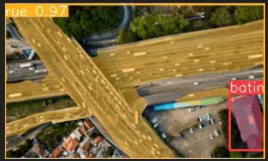
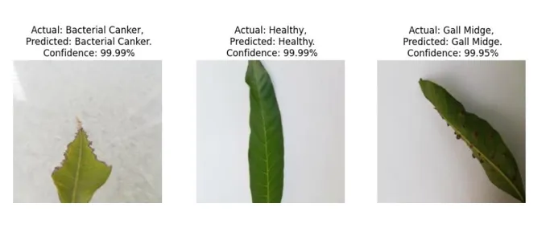

As a Computer Vision Engineer, I have been working on several projects that involve training machine learning models and analyzing data. My expertise includes natural language processing, computer vision, and deep learning. I am always looking for challenging problems to solve and strive to create innovative solutions. This website showcases my portfolio of work in the field of Machine Learning. Feel free to browse through my projects and get in touch with me for any inquiries or collaboration opportunities.


Developed drug sensitivity prediction model for cancer cell lines and picked out drug targets with 90% accuracy. Made the predictions explainable by using SHAP. A research paper is under publication.

Used stratified k-folds cross validation method for Logistic Regression, Decision Tree, Random Forest and XGBoost modelling techniques to predict whether the loan approval application of a customer in a banking firm will be approved or not.
Led end to end business model development for a client. Built disease detection model for plants by using CNN and YOLO. Helped the farmer to take action beforehand and save the crops by timely pesticide control and increased the profits by 30%.

Imagine if roads could communicate their needs to us. We go a small step in this direction- using advanced computer vision cameras and detection algorithms, we can carefully inspect the road surface for signs of distress and identify faults that might go unnoticed by the human eye.
I trained the Yolov8 on open-source data consisting of two classes of road defects: cracks and potholes.
Developed model by market basket analysis with Apriori algorithm for a grocery store, helped the client arrange the products efficiently in the shelves, and enhanced the sales by 85%.
Analyzed real estate data and predicted the price of houses and rental values. Reduced the searching time of customers by 70% and helped the buyers and sellers to figure out the worth of their properties.

YOLOv8, renowned for its accuracy and efficiency, has proven to be a game-changer in instance segmentation. The model precisely delineates each object on the road, from vehicles to traffic signs, paving the way for enhanced road understanding and safety.

Revolutionizing the future of air traffic and security using computer vision and advanced machine learning tools.

Traditionally, farmers have relied on manual inspection to identify disease symptoms. However, this process is time-consuming and often prone to errors. I trained a ML
algorithm which can automatically detect plant leaf diseases in real-time.
Trained a machine learning algorithm for detecting five different types of Yoga poses. This can be expanded to include a diverse range of poses, and used in applications dealing with
personal training programs.